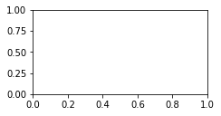
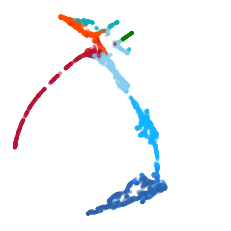
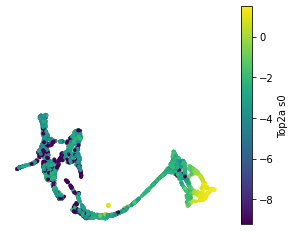

Case Study: Pancreatic Endocrinogenesis¶
[1]:
import os
import glob
import random
import sys
# import from absolute directory
srcdir = '/Users/pengzhizhang/cellDancer/src'
srcdir = '/Users/shengyuli/Library/CloudStorage/OneDrive-HoustonMethodist/work/Velocity/bin/cellDancer_polish/src'
sys.path.append(srcdir)
import matplotlib.pyplot as plt
import pandas as pd
import cdplt
velocity estimation¶
[2]:
# import celldancer.velocity_estimation as calc_velocity
import sys
srcdir = '/Users/shengyuli/Library/CloudStorage/OneDrive-HoustonMethodist/work/Velocity/bin/cellDancer_polish/src'
sys.path.append(srcdir)
import pandas as pd
import sys
from plotting import gene as cdpl_gene
from plotting import gene as cdpl_cell
from plotting.colormap import *
from celldancer import velocity_estimation
[8]:
raw_path='/Users/shengyuli/Library/CloudStorage/OneDrive-HoustonMethodist/work/Velocity/data/raw_data/pancreatic_endocrinogenesis.csv'
load_raw_data=pd.read_csv(raw_path)
load_raw_data
[8]:
| gene_name | u0 | s0 | cellID | clusters | embedding1 | embedding2 | |
|---|---|---|---|---|---|---|---|
| 0 | Sntg1 | 0.045809 | 0.000000 | Pre-endocrine | AAACCTGAGAGGGATA | 6.143066 | -0.063644 |
| 1 | Sntg1 | 0.058600 | 0.000000 | Ductal | AAACCTGAGCCTTGAT | -9.906417 | 0.197778 |
| 2 | Sntg1 | 0.058696 | 0.000000 | Alpha | AAACCTGAGGCAATTA | 7.559791 | 0.583762 |
| 3 | Sntg1 | 0.198549 | 0.000000 | Ductal | AAACCTGCATCATCCC | -11.283765 | 4.218998 |
| 4 | Sntg1 | 0.000000 | 0.000000 | Ngn3 high EP | AAACCTGGTAAGTGGC | 1.721565 | -4.753407 |
| ... | ... | ... | ... | ... | ... | ... | ... |
| 7391995 | Erdr1 | 0.461130 | 0.505213 | Pre-endocrine | TTTGTCAAGTGACATA | 4.768472 | -1.388353 |
| 7391996 | Erdr1 | 0.643907 | 0.531752 | Ngn3 high EP | TTTGTCAAGTGTGGCA | -1.873335 | -4.182650 |
| 7391997 | Erdr1 | 0.626258 | 0.406073 | Ductal | TTTGTCAGTTGTTTGG | -9.882250 | -0.105594 |
| 7391998 | Erdr1 | 0.409493 | 0.514864 | Alpha | TTTGTCATCGAATGCT | 6.612424 | 4.531895 |
| 7391999 | Erdr1 | 0.305068 | 0.359560 | Epsilon | TTTGTCATCTGTTTGT | 3.071044 | 1.120432 |
7392000 rows × 7 columns
[3]:
gene_list=["Ank","Abcc8","Tcp11","Nfib","Ppp3ca",
"Rbfox3","Cdk1","Gng12","Map1b","Cpe",
"Gnao1","Pcsk2","Tmem163","Pak3","Wfdc15b",
"Nnat","Anxa4","Actn4","Btbd17","Dcdc2a",
"Adk","Smoc1","Mapre3","Pim2","Tspan7",
"Top2a","Rap1b","Sulf2"]
[11]:
result_path = '/Users/shengyuli/Library/CloudStorage/OneDrive-HoustonMethodist/work/Velocity/data/pancreas/velocity_result/polish/'
brief, load_cellDancer=velocity_estimation.train(load_raw_data,gene_choice=gene_list,result_path=result_path,n_jobs=8)
Using /Users/shengyuli/Library/CloudStorage/OneDrive-HoustonMethodist/work/Velocity/data/pancreas/velocity_result/polish/cell_dancer_velocity_2022-04-28 12-37-28 as the output path.
GPU available: False, used: False
TPU available: False, using: 0 TPU cores
IPU available: False, using: 0 IPUs
--------------------------------------------------------------------------------
DATALOADER:0 TEST RESULTS
{}
--------------------------------------------------------------------------------
Velocity Estimation: 0%| | 0/28 [00:00<?, ?it/s]GPU available: False, used: False
TPU available: False, using: 0 TPU cores
IPU available: False, using: 0 IPUs
GPU available: False, used: False
TPU available: False, using: 0 TPU cores
IPU available: False, using: 0 IPUs
GPU available: False, used: False
TPU available: False, using: 0 TPU cores
IPU available: False, using: 0 IPUs
GPU available: False, used: False
TPU available: False, using: 0 TPU cores
IPU available: False, using: 0 IPUs
GPU available: False, used: False
TPU available: False, using: 0 TPU cores
IPU available: False, using: 0 IPUs
GPU available: False, used: False
TPU available: False, using: 0 TPU cores
IPU available: False, using: 0 IPUs
GPU available: False, used: False
TPU available: False, using: 0 TPU cores
IPU available: False, using: 0 IPUs
GPU available: False, used: False
TPU available: False, using: 0 TPU cores
IPU available: False, using: 0 IPUs
Velocity Estimation: 4%|▊ | 1/28 [00:01<00:43, 1.61s/it]GPU available: False, used: False
TPU available: False, using: 0 TPU cores
IPU available: False, using: 0 IPUs
Velocity Estimation: 7%|█▋ | 2/28 [00:02<00:24, 1.07it/s]GPU available: False, used: False
TPU available: False, using: 0 TPU cores
IPU available: False, using: 0 IPUs
GPU available: False, used: False
TPU available: False, using: 0 TPU cores
IPU available: False, using: 0 IPUs
Velocity Estimation: 14%|███▎ | 4/28 [00:02<00:13, 1.74it/s]GPU available: False, used: False
TPU available: False, using: 0 TPU cores
IPU available: False, using: 0 IPUs
GPU available: False, used: False
TPU available: False, using: 0 TPU cores
IPU available: False, using: 0 IPUs
Velocity Estimation: 21%|████▉ | 6/28 [00:03<00:08, 2.55it/s]GPU available: False, used: False
TPU available: False, using: 0 TPU cores
IPU available: False, using: 0 IPUs
Velocity Estimation: 25%|█████▊ | 7/28 [00:03<00:06, 3.01it/s]GPU available: False, used: False
TPU available: False, using: 0 TPU cores
IPU available: False, using: 0 IPUs
Velocity Estimation: 29%|██████▌ | 8/28 [00:03<00:08, 2.49it/s]GPU available: False, used: False
TPU available: False, using: 0 TPU cores
IPU available: False, using: 0 IPUs
Velocity Estimation: 32%|███████▍ | 9/28 [00:04<00:09, 2.05it/s]GPU available: False, used: False
TPU available: False, using: 0 TPU cores
IPU available: False, using: 0 IPUs
Velocity Estimation: 36%|███████▊ | 10/28 [00:05<00:08, 2.15it/s]GPU available: False, used: False
TPU available: False, using: 0 TPU cores
IPU available: False, using: 0 IPUs
GPU available: False, used: False
TPU available: False, using: 0 TPU cores
IPU available: False, using: 0 IPUs
Velocity Estimation: 43%|█████████▍ | 12/28 [00:05<00:05, 2.84it/s]GPU available: False, used: False
TPU available: False, using: 0 TPU cores
IPU available: False, using: 0 IPUs
Velocity Estimation: 46%|██████████▏ | 13/28 [00:05<00:04, 3.27it/s]GPU available: False, used: False
TPU available: False, using: 0 TPU cores
IPU available: False, using: 0 IPUs
Velocity Estimation: 50%|███████████ | 14/28 [00:05<00:04, 3.41it/s]GPU available: False, used: False
TPU available: False, using: 0 TPU cores
IPU available: False, using: 0 IPUs
Velocity Estimation: 54%|███████████▊ | 15/28 [00:06<00:05, 2.41it/s]GPU available: False, used: False
TPU available: False, using: 0 TPU cores
IPU available: False, using: 0 IPUs
Velocity Estimation: 57%|████████████▌ | 16/28 [00:07<00:05, 2.01it/s]GPU available: False, used: False
TPU available: False, using: 0 TPU cores
IPU available: False, using: 0 IPUs
Velocity Estimation: 61%|█████████████▎ | 17/28 [00:07<00:05, 2.06it/s]GPU available: False, used: False
TPU available: False, using: 0 TPU cores
IPU available: False, using: 0 IPUs
Velocity Estimation: 64%|██████████████▏ | 18/28 [00:08<00:05, 1.99it/s]GPU available: False, used: False
TPU available: False, using: 0 TPU cores
IPU available: False, using: 0 IPUs
Velocity Estimation: 68%|██████████████▉ | 19/28 [00:08<00:03, 2.27it/s]GPU available: False, used: False
TPU available: False, using: 0 TPU cores
IPU available: False, using: 0 IPUs
Velocity Estimation: 71%|███████████████▋ | 20/28 [00:08<00:02, 2.71it/s]GPU available: False, used: False
TPU available: False, using: 0 TPU cores
IPU available: False, using: 0 IPUs
Velocity Estimation: 100%|██████████████████████| 28/28 [00:13<00:00, 2.03it/s]
Set Parameters¶
[6]:
n_neighbors=100 #100
downsample_step=(60,60)
grid=(20,20)
dt = 0.01
t_total = 10000
n_repeats = 10
Load detail¶
[4]:
detail_result_path = '/Users/shengyuli/Library/CloudStorage/OneDrive-HoustonMethodist/work/Velocity/data/pancreas/velocity_result/velocity_result_all_genes_with_bin/2000_smooth/combined_detail'
output_path = os.getcwd()
detail_file = os.path.join(detail_result_path,'combined_detail.csv')
load_cellDancer=pd.read_csv(detail_file)
[7]:
from compute_cell_velocity import compute_cell_velocity
gene_choice=list(set(load_cellDancer.gene_name))
compute_cell_velocity(load_cellDancer=load_cellDancer,
gene_list=gene_choice,
mode="gene",
transfer_mode='power10',
n_neighbors=n_neighbors,
step=downsample_step)
/Users/shengyuli/anaconda3/envs/celldancer_env/lib/python3.7/site-packages/pandas/core/generic.py:5516: SettingWithCopyWarning:
A value is trying to be set on a copy of a slice from a DataFrame.
Try using .loc[row_indexer,col_indexer] = value instead
See the caveats in the documentation: https://pandas.pydata.org/pandas-docs/stable/user_guide/indexing.html#returning-a-view-versus-a-copy
self[name] = value
(2000, 3696)
(2000, 3696)
/Users/shengyuli/Library/CloudStorage/OneDrive-HoustonMethodist/work/Velocity/bin/cellDancer_polish/src/compute_cell_velocity.py:142: RuntimeWarning: invalid value encountered in true_divide
np.sqrt(np.dot(ematrix_ss[:, None], vmatrix_ss[None]))
after downsampling, there are 846 cells.
[8]:
load_cellDancer
[8]:
| cellIndex | gene_name | s0 | u0 | s1 | u1 | alpha | beta | gamma | cost | clusters | cellID | embedding1 | embedding2 | index | velocity1 | velocity2 | |
|---|---|---|---|---|---|---|---|---|---|---|---|---|---|---|---|---|---|
| 0 | 0 | 2010107G23Rik | 0.645871 | 0.000000 | 0.631752 | 0.000444 | 0.004090 | 0.033074 | 0.143236 | 0.085577 | Pre-endocrine | AAACCTGAGAGGGATA | 6.143066 | -0.063644 | 0 | -0.018067 | 0.207249 |
| 1 | 1 | 2010107G23Rik | 0.659958 | 0.050844 | 0.667935 | 0.049499 | 0.002315 | 0.013641 | 0.159593 | 0.085577 | Ductal | AAACCTGAGCCTTGAT | -9.906417 | 0.197778 | 1 | -0.194755 | -0.393044 |
| 2 | 2 | 2010107G23Rik | 0.536477 | 0.031027 | 0.543241 | 0.030047 | 0.002852 | 0.018068 | 0.154822 | 0.085577 | Alpha | AAACCTGAGGCAATTA | 7.559791 | 0.583762 | 2 | NaN | NaN |
| 3 | 3 | 2010107G23Rik | 0.172749 | 0.000000 | 0.168829 | 0.000422 | 0.003884 | 0.025258 | 0.148675 | 0.085577 | Ductal | AAACCTGCATCATCCC | -11.283765 | 4.218998 | 3 | -0.288228 | 0.513889 |
| 4 | 4 | 2010107G23Rik | 2.669759 | 0.024144 | 2.671663 | 0.020978 | 0.003705 | 0.064247 | 0.127344 | 0.085577 | Ngn3 high EP | AAACCTGGTAAGTGGC | 1.721565 | -4.753407 | 4 | NaN | NaN |
| ... | ... | ... | ... | ... | ... | ... | ... | ... | ... | ... | ... | ... | ... | ... | ... | ... | ... |
| 7391995 | 3691 | Zfp949 | 0.175796 | 0.175190 | 0.163429 | 0.174457 | 0.209083 | 0.203498 | 0.271190 | 0.043265 | Pre-endocrine | TTTGTCAAGTGACATA | 4.768472 | -1.388353 | 3691 | NaN | NaN |
| 7391996 | 3692 | Zfp949 | 0.078194 | 0.130215 | 0.086273 | 0.142232 | 0.216891 | 0.203658 | 0.268408 | 0.043265 | Ngn3 high EP | TTTGTCAAGTGTGGCA | -1.873335 | -4.182650 | 3692 | NaN | NaN |
| 7391997 | 3693 | Zfp949 | 0.000000 | 0.044002 | 0.011225 | 0.076212 | 0.210932 | 0.204190 | 0.266029 | 0.043265 | Ductal | TTTGTCAGTTGTTTGG | -9.882250 | -0.105594 | 3693 | NaN | NaN |
| 7391998 | 3694 | Zfp949 | 0.041343 | 0.086365 | 0.050158 | 0.108793 | 0.214619 | 0.203931 | 0.267263 | 0.043265 | Alpha | TTTGTCATCGAATGCT | 6.612424 | 4.531895 | 3694 | NaN | NaN |
| 7391999 | 3695 | Zfp949 | 0.085127 | 0.232572 | 0.116726 | 0.219691 | 0.218535 | 0.202875 | 0.269143 | 0.043265 | Epsilon | TTTGTCATCTGTTTGT | 3.071044 | 1.120432 | 3695 | NaN | NaN |
7392000 rows × 17 columns
Estimate pseudotime¶
[ ]:
#import importlib
#importlib.reload(sys.modules['pseudo_time'])
from pseudo_time import pseudo_time
cell_time = dict()
dt = 0.01
t_total = {dt:int(10/dt)}
n_repeats = 10
grid = (20,20)
pseudo_time(load_cellDancer, grid, dt, t_total[dt], n_repeats, downsample_step)
[ ]:
load_cellDancer
[10]:
import cdplt
fig, ax = plt.subplots(ncols=5, figsize=(15,4))
gene = 'Sulf2'
cdplt.cell.scatter_cell(ax[0],load_cellDancer, colors='alpha',
gene_name=gene, velocity=False, alpha=1)
cdplt.cell.scatter_cell(ax[1],load_cellDancer, colors='beta',
gene_name=gene, velocity=False, alpha=1)
cdplt.cell.scatter_cell(ax[2],load_cellDancer, colors='gamma',
gene_name=gene, velocity=False, alpha=1)
cdplt.cell.scatter_cell(ax[3],load_cellDancer, colors='spliced',
gene_name=gene, velocity=False, alpha=1)
cdplt.cell.scatter_cell(ax[4],load_cellDancer, colors='unspliced',
gene_name=gene, velocity=False, alpha=1)
ax[0].axis('off')
ax[1].axis('off')
ax[2].axis('off')
ax[3].axis('off')
ax[4].axis('off')
ax[0].set_title('alpha-'+gene)
ax[1].set_title('beta-'+gene)
ax[2].set_title('gamma-'+gene)
ax[3].set_title('spliced-'+gene)
ax[4].set_title('unspliced-'+gene)
plt.tight_layout()
plt.show()

[15]:
fig, ax = plt.subplots(figsize=(6,6))
clusters = load_cellDancer['clusters'].drop_duplicates().to_list()
cdplt.cell.scatter_cell(ax,load_cellDancer, colors=colormap_pancreas, alpha=0.5,
gene_name=gene, velocity=True)
ax.axis('off')
plt.show()

[ ]:
fig, ax = plt.subplots(figsize=(6,6))
clusters = load_cellDancer['clusters'].drop_duplicates().to_list()
cdplt.cell.scatter_cell(ax,load_cellDancer, colors='pseudotime', alpha=0.5,
gene_name=gene, velocity=False, custom_xlim=(-5,11), custom_ylim=(4,18))
ax.axis('off')
plt.show()
[ ]:
[17]:
from plotting import colormap
import math
ncols=5
fig = plt.figure(figsize=(20,12))
gene_list=["Ank","Abcc8","Tcp11","Nfib","Ppp3ca",
"Rbfox3","Cdk1","Gng12","Map1b","Cpe",
"Gnao1","Pcsk2","Tmem163","Pak3","Wfdc15b",
"Nnat","Anxa4","Actn4","Btbd17","Dcdc2a",
"Adk","Smoc1","Mapre3","Pim2","Tspan7",
"Top2a","Rap1b","Sulf2"]
load_cellDancer
for i in range(len(gene_list)):
ax = fig.add_subplot(math.ceil(len(gene_list)/ncols), ncols, i+1)
cdplt.gene.scatter_gene(
ax=ax,
x='pseudotime',
y='s0',
load_cellDancer=load_cellDancer,
save_path=None,
custom_xlim=None,
custom_ylim=None,
colors=colormap_pancreas,
alpha=0.5,
s = 5,
velocity=False,
gene_name=gene_list[i])
ax.set_title(gene_list[i])
ax.axis('off')
plt.show()
---------------------------------------------------------------------------
KeyError Traceback (most recent call last)
/var/folders/0m/7mylm3gs5hj8zfvd2hbr8ntc0000gq/T/ipykernel_83110/3998937687.py in <module>
24 s = 5,
25 velocity=False,
---> 26 gene_name=gene_list[i])
27
28 ax.set_title(gene_list[i])
~/Library/CloudStorage/OneDrive-HoustonMethodist/work/Velocity/bin/cellDancer_polish/src/plotting/gene.py in scatter_gene(ax, x, y, load_cellDancer, save_path, custom_xlim, custom_ylim, vmin, vmax, colors, alpha, s, velocity, step, gene_name, legend, plot_cmap)
81
82 assert gene_name, '\nError! gene_name is required!\n'
---> 83 xy = extract_from_df(load_cellDancer, [x, y], gene_name)
84 ax.scatter(xy[:, 0],
85 xy[:, 1],
~/Library/CloudStorage/OneDrive-HoustonMethodist/work/Velocity/bin/cellDancer_polish/src/utilities.py in extract_from_df(load_cellDancer, attr_list, gene_name)
453 gene_name = load_cellDancer.gene_name[0]
454 one_gene_idx = load_cellDancer.gene_name == gene_name
--> 455 data = load_cellDancer[one_gene_idx][attr_list].dropna()
456 return data.to_numpy()
457
~/anaconda3/envs/celldancer_env/lib/python3.7/site-packages/pandas/core/frame.py in __getitem__(self, key)
3462 if is_iterator(key):
3463 key = list(key)
-> 3464 indexer = self.loc._get_listlike_indexer(key, axis=1)[1]
3465
3466 # take() does not accept boolean indexers
~/anaconda3/envs/celldancer_env/lib/python3.7/site-packages/pandas/core/indexing.py in _get_listlike_indexer(self, key, axis)
1312 keyarr, indexer, new_indexer = ax._reindex_non_unique(keyarr)
1313
-> 1314 self._validate_read_indexer(keyarr, indexer, axis)
1315
1316 if needs_i8_conversion(ax.dtype) or isinstance(
~/anaconda3/envs/celldancer_env/lib/python3.7/site-packages/pandas/core/indexing.py in _validate_read_indexer(self, key, indexer, axis)
1375
1376 not_found = list(ensure_index(key)[missing_mask.nonzero()[0]].unique())
-> 1377 raise KeyError(f"{not_found} not in index")
1378
1379
KeyError: "['pseudotime'] not in index"

[ ]:
[18]:
from plotting import colormap
ncols=5
fig = plt.figure(figsize=(20,12))
import math
load_cellDancer
for i in range(len(gene_list)):
ax = fig.add_subplot(math.ceil(len(gene_list)/ncols), ncols, i+1)
cdplt.gene.scatter_gene(
ax=ax,
x='pseudotime',
y='s0',
load_cellDancer=load_cellDancer,
save_path=None,
custom_xlim=None,
custom_ylim=None,
colors=colormap.colormap_neuro,
alpha=0.5,
s = 5,
velocity=False,
gene_name=gene_list[i])
ax.set_title(gene_list[i])
ax.axis('off')
plt.show()
---------------------------------------------------------------------------
KeyError Traceback (most recent call last)
/var/folders/0m/7mylm3gs5hj8zfvd2hbr8ntc0000gq/T/ipykernel_83110/1041138667.py in <module>
18 s = 5,
19 velocity=False,
---> 20 gene_name=gene_list[i])
21
22 ax.set_title(gene_list[i])
~/Library/CloudStorage/OneDrive-HoustonMethodist/work/Velocity/bin/cellDancer_polish/src/plotting/gene.py in scatter_gene(ax, x, y, load_cellDancer, save_path, custom_xlim, custom_ylim, vmin, vmax, colors, alpha, s, velocity, step, gene_name, legend, plot_cmap)
81
82 assert gene_name, '\nError! gene_name is required!\n'
---> 83 xy = extract_from_df(load_cellDancer, [x, y], gene_name)
84 ax.scatter(xy[:, 0],
85 xy[:, 1],
~/Library/CloudStorage/OneDrive-HoustonMethodist/work/Velocity/bin/cellDancer_polish/src/utilities.py in extract_from_df(load_cellDancer, attr_list, gene_name)
453 gene_name = load_cellDancer.gene_name[0]
454 one_gene_idx = load_cellDancer.gene_name == gene_name
--> 455 data = load_cellDancer[one_gene_idx][attr_list].dropna()
456 return data.to_numpy()
457
~/anaconda3/envs/celldancer_env/lib/python3.7/site-packages/pandas/core/frame.py in __getitem__(self, key)
3462 if is_iterator(key):
3463 key = list(key)
-> 3464 indexer = self.loc._get_listlike_indexer(key, axis=1)[1]
3465
3466 # take() does not accept boolean indexers
~/anaconda3/envs/celldancer_env/lib/python3.7/site-packages/pandas/core/indexing.py in _get_listlike_indexer(self, key, axis)
1312 keyarr, indexer, new_indexer = ax._reindex_non_unique(keyarr)
1313
-> 1314 self._validate_read_indexer(keyarr, indexer, axis)
1315
1316 if needs_i8_conversion(ax.dtype) or isinstance(
~/anaconda3/envs/celldancer_env/lib/python3.7/site-packages/pandas/core/indexing.py in _validate_read_indexer(self, key, indexer, axis)
1375
1376 not_found = list(ensure_index(key)[missing_mask.nonzero()[0]].unique())
-> 1377 raise KeyError(f"{not_found} not in index")
1378
1379
KeyError: "['pseudotime'] not in index"

[ ]:
[22]:
%load_ext autoreload
%autoreload 2
ncols=5
fig = plt.figure(figsize=(20,24))
for i in range(len(gene_list)):
ax = fig.add_subplot(math.ceil(len(gene_list)/ncols), ncols, i+1)
cdplt.gene.scatter_gene(
ax=ax,
x='spliced',
y='unspliced',
load_cellDancer=load_cellDancer,
save_path=None,
custom_xlim=None,
custom_ylim=None,
colors=colormap.colormap_pancreas,
alpha=0.5,
s = 5,
velocity=True,
gene_name=gene_list[i])
ax.set_title(gene_list[i])
ax.axis('off')
plt.show()
The autoreload extension is already loaded. To reload it, use:
%reload_ext autoreload

[ ]:
Rsquare rank¶
[18]:
%load_ext autoreload
%autoreload 2
from utilities import *
cluster_choice=['Blood progenitors 1','Blood progenitors 2','Erythroid1','Erythroid2','Erythroid3']
rsquare_rank=rank_rsquare(load_cellDancer,gene_list=gene_list,cluster_choice=cluster_choice)
rsquare_rank
The autoreload extension is already loaded. To reload it, use:
%reload_ext autoreload
Calculate rsquare: 100%|████████████████████████| 13/13 [00:08<00:00, 1.52it/s]
[18]:
| gene_name | r_square | |
|---|---|---|
| 0 | Hba-x | 0.992753 |
| 1 | Blvrb | 0.992749 |
| 2 | Mllt3 | 0.982714 |
| 3 | Smim1 | 0.977385 |
| 4 | Skap1 | 0.940685 |
| 5 | Snca | 0.866329 |
| 6 | Smarca2 | 0.844709 |
| 7 | Yipf5 | 0.840429 |
| 8 | Nfkb1 | 0.804476 |
| 9 | Phc2 | 0.711426 |
| 10 | Coro2b | 0.711294 |
| 11 | Myo1b | 0.694352 |
| 12 | Sulf2 | 0.657642 |
[ ]:
%load_ext autoreload
%autoreload 2
UMAP using alpha, beta, and gamma¶
[26]:
load_cellDancer=calculate_para_umap(load_cellDancer,'alpha')
OMP: Info #271: omp_set_nested routine deprecated, please use omp_set_max_active_levels instead.
[27]:
load_cellDancer=calculate_para_umap(load_cellDancer,'beta')
[28]:
load_cellDancer=calculate_para_umap(load_cellDancer,'gamma')
[29]:
load_cellDancer=calculate_para_umap(load_cellDancer,'alpha_beta_gamma')
[49]:
plot_para_umap('alpha',load_cellDancer,cluster_map=cdplt.colormap.colormap_pancreas ,save_path=None,title=None)
plot_para_umap('alpha',load_cellDancer,gene_name='Top2a',cluster_map=cdplt.colormap.colormap_pancreas ,save_path=None,title=None)


[50]:
plot_para_umap('beta',load_cellDancer,cluster_map=cdplt.colormap.colormap_pancreas ,save_path=None,title=None)
plot_para_umap('beta',load_cellDancer,gene_name='Top2a',cluster_map=cdplt.colormap.colormap_pancreas ,save_path=None,title=None)


[51]:
plot_para_umap('gamma',load_cellDancer,cluster_map=cdplt.colormap.colormap_pancreas ,save_path=None,title=None)
plot_para_umap('gamma',load_cellDancer,gene_name='Top2a',cluster_map=cdplt.colormap.colormap_pancreas ,save_path=None,title=None)


[52]:
plot_para_umap('alpha_beta_gamma',load_cellDancer,cluster_map=cdplt.colormap.colormap_pancreas ,save_path=None,title=None)
plot_para_umap('alpha_beta_gamma',load_cellDancer,gene_name='Top2a',cluster_map=cdplt.colormap.colormap_pancreas ,save_path=None,title=None)


[48]:
def calculate_para_umap(load_cellDancer,para,umap_n=25):
import umap
if set([(para+'_umap1'),(para+'_umap2')]).issubset(load_cellDancer.columns):
load_cellDancer=load_cellDancer.drop(columns=[(para+'_umap1'),(para+'_umap2')])
if para=='alpha' or para=='beta' or para=='gamma':
para_df=load_cellDancer.pivot(index='cellIndex', columns='gene_name', values=para)
elif para=='alpha_beta_gamma':
alpha_df=load_cellDancer.pivot(index='cellIndex', columns='gene_name', values='alpha')
beta_df=load_cellDancer.pivot(index='cellIndex', columns='gene_name', values='beta')
gamma_df=load_cellDancer.pivot(index='cellIndex', columns='gene_name', values='gamma')
para_df=pd.concat([alpha_df,beta_df,gamma_df],axis=1)
else:
print('para should be set in one of alpha, beta, gamma, or alpha_beta_gamma.')
def get_umap(df,n_neighbors=umap_n, min_dist=0.1, n_components=2, metric='euclidean'):
fit = umap.UMAP(
n_neighbors=n_neighbors,
min_dist=min_dist,
n_components=n_components,
metric=metric
)
embed = fit.fit_transform(df);
return(embed)
umap_para=get_umap(para_df)
umap_info=pd.DataFrame(umap_para,columns=[(para+'_umap1'),(para+'_umap2')])
gene_amt=len(load_cellDancer.gene_name.drop_duplicates())
umap_col=pd.concat([umap_info]*gene_amt)
umap_col.index=load_cellDancer.index
load_cellDancer=pd.concat([load_cellDancer,umap_col],axis=1)
return(load_cellDancer)
def plot_para_umap(para,load_cellDancer,gene_name=None,umap_n=25,cluster_map=None,save_path=None,title=None,legend_annotation=False):
import numpy as np
onegene=load_cellDancer[load_cellDancer.gene_name==load_cellDancer.gene_name[0]]
umap_para=onegene[[(para+'_umap1'),(para+'_umap2')]].to_numpy()
onegene_cluster_info=onegene.clusters
if gene_name is None:
if cluster_map is None:
from plotting.colormap import build_colormap
cluster_map=build_colormap(onegene_cluster_info)
colors = list(map(lambda x: cluster_map.get(x, 'black'), onegene_cluster_info))
if legend_annotation:
markers = [plt.Line2D([0,0],[0,0],color=color, marker='o', linestyle='') for color in cluster_map.values()]
lgd=plt.legend(markers, cluster_map.keys(), numpoints=1,loc='upper left',bbox_to_anchor=(1.01, 1))
plt.scatter(umap_para[:,0], umap_para[:,1],c=colors,s=15,alpha=0.5,edgecolor="none")
plt.axis('square')
plt.axis('off')
else:
onegene=load_cellDancer[load_cellDancer.gene_name==gene_name]
plt.figure()
plt.scatter(umap_para[:,0], umap_para[:,1],c=np.log(onegene.s0+0.0001),s=15,alpha=1,edgecolor="none")
plt.axis('square')
plt.axis('off')
plt.colorbar(label=gene_name+" s0")
if save_path is not None:
plt.savefig(save_path,bbox_inches='tight',bbox_extra_artists=(lgd,))
umap_df=pd.concat([pd.DataFrame({'umap1':umap_para[:,0],'umap2':umap_para[:,1]})],axis=1)